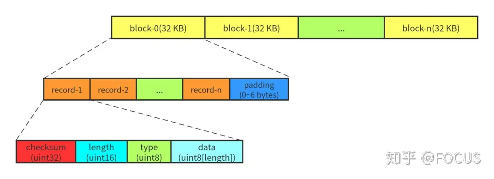
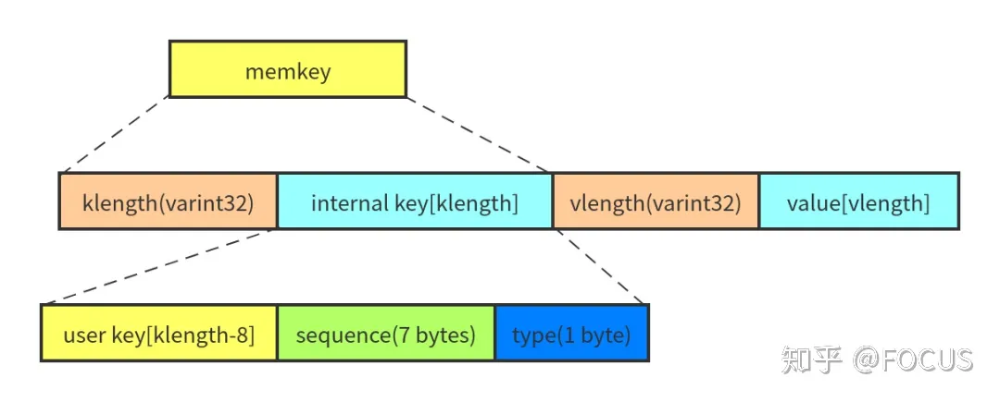
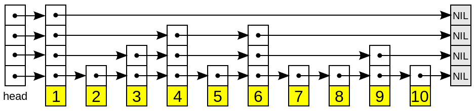
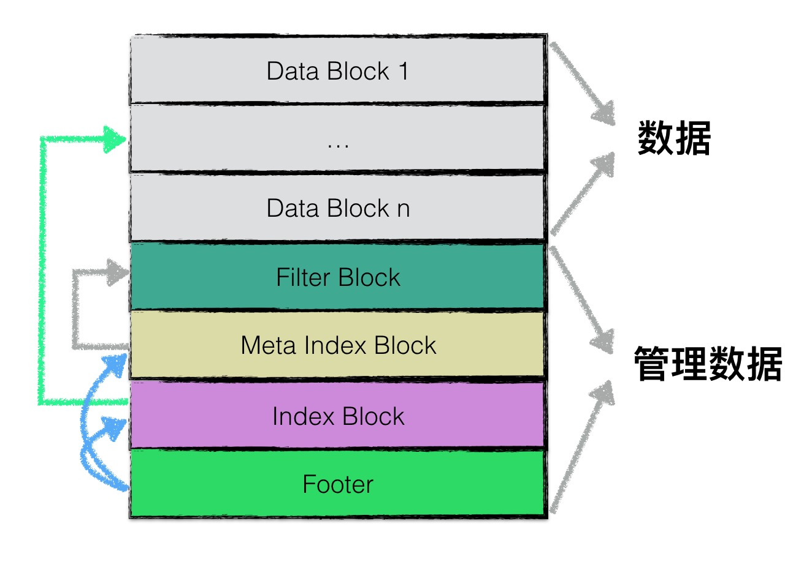
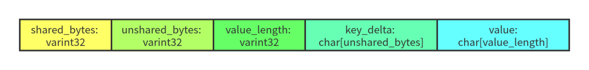
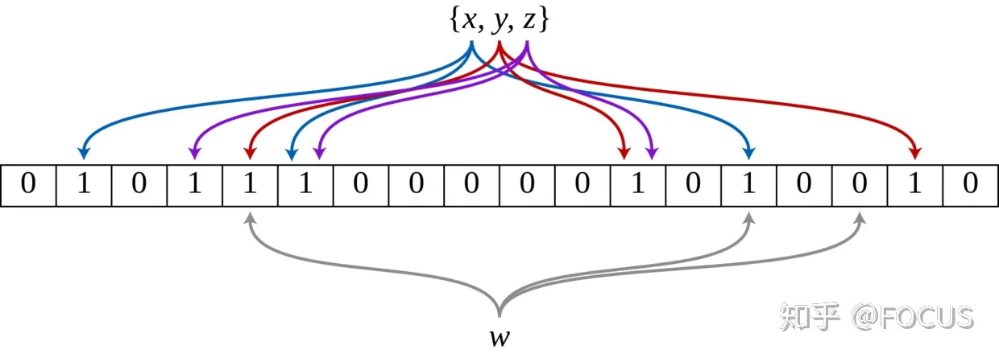
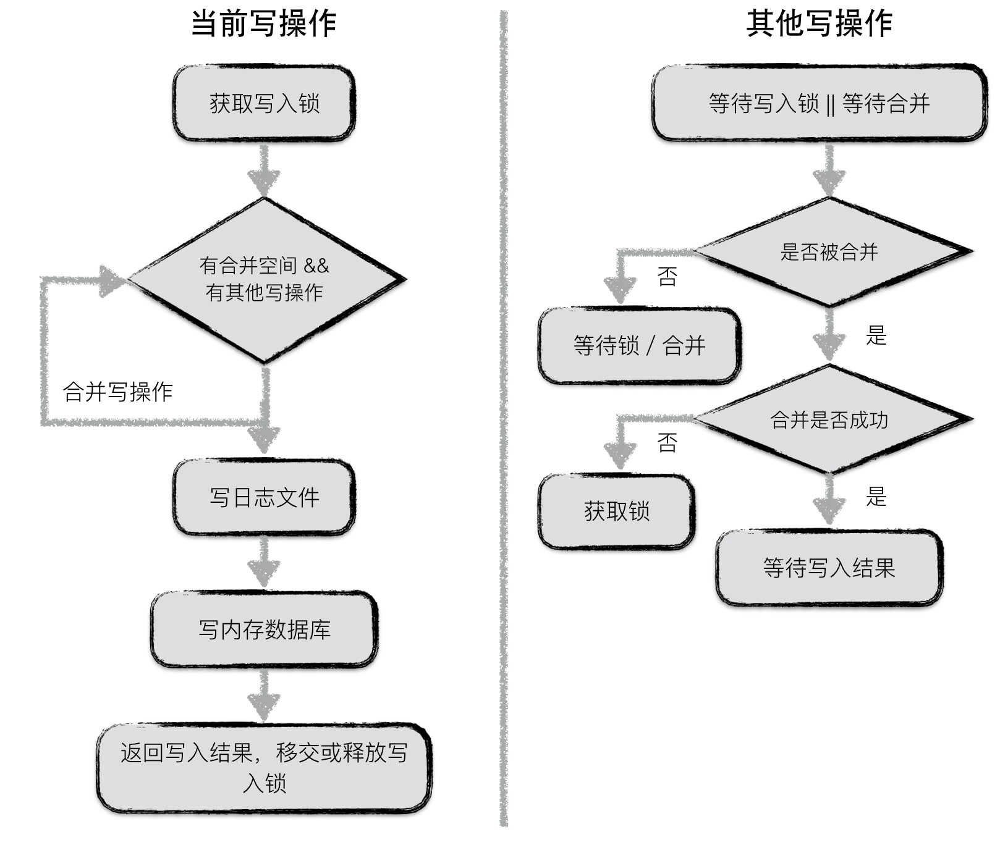
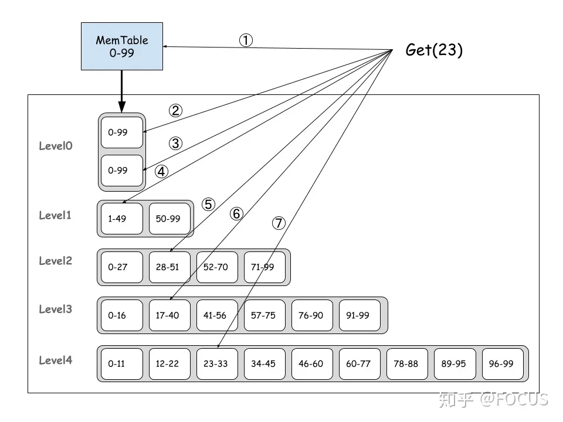

LevelDB
基本概念
log
leveldb 的写操作不是直接写入磁盘，而是先写入内存。指 Write Ahead Log，参考 LevelDB 的文档 log_format.md。
在写内存前首先将所有写操作写到日志文件中，当有异常情况发生时，可以通过日志文件中记录的写入操作完成数据库的恢复
每次针对日志文件的写都是一次顺序写，效率高，整体写入性能好

LevelDB 的 log 文件内容被组织成多个 32 KB 的定长块（block）。每个 block 由 1~多个 record 组成（末尾可能会 padding）。一个 record 由一个固定 **7 字节**的 header（checksum: uint32 + length: uint16 + type: uint8） 和实际数据（data: uint8[length]）组成。
如果 block 的末尾不足 7 字节（小于 header 的大小），则全部填 0x00，读取的时候会被忽略。 如果 block 的末尾刚好 7 字节，则填充一个 length 为 0 的 record。
memtable
leveldb 的一次写入操作不是直接将数据落盘，而是首先写入到一个内存中的数据结构 Memtable。
memtable 中所有的数据排序之后按顺序存储，等到其存储内容达到阈值（write_buffer_size 默认 4k）便将其转换成一个不可修改的 memtable，与此同时创建一个新的 memtable，提供继续进行的读写操作。LevelDB 的后台线程会将 imm_ compact 成 SSTable 保存在磁盘上。如果前台的写入速度很快，有可能出现 mem_ 的大小已经超过 write_buffer_size，但是前一个 imm_ 还没有被 compact 到磁盘上，无法切换 MemTable，此时就会出现 stall write（阻塞写请求）。
LevelDB 的 MemTable 的主要功能是将内部编码、内存分配（Arena）和 SkipList 封装在一起。
内部编码
leveldb::MemTable 主要支持的操作有：
- 插入单条记录：Add。
- 查询单条记录：Get。
- 遍历（范围查询）：MemTableIterator。

MemTable 中保存的数据是 key 和 value 编码成的一个字符串，由四个部分组成：
- klength: 变长的 32 位整数（varint 的编码），表示 internal key 的长度。
- internal key: 长度为 klength 的字符串。
- vlength: 变长的 32 位整数，表示 value 的长度。
- value: 长度为 vlength 的字符串。因为 value 没有参与排序，所以相关的讨论暂时可以忽略。
MemTable 的 KeyComparator 负责从 memkey 中提取出 internalkey，最终排序逻辑是使用 **InternalKeyComparator **进行比较，排序规则如下：
- 优先按照 user key 进行排序。
- User key 相同的按照 seq 降序排序。
- User key 和 seq 相同的按照 type 降序排序（逻辑上不会达到这一步，因为一个 LevelDB 的 sequence 是单调递增的）。
所以，在一个 MemTable 中，相同的 user key 的多个版本，新的排在前面，旧的排在后面。
内存分配
MemTable 通过 Arena 进行内存分配和使用统计。Arena 其实就是一个简化的内存池。它只提供分配内存的接口，不提供释放内存的接口。只有当整个 Arena 对象销毁的时候才会将之前申请的内存释放掉。 Arena 提供了两个内存分配接口：
-
一般情况下，Allocate 每次从操作系统申请一块大小为 kBlockSize 的内存，默认是 4KB。之后，在 block 剩余内存足够的情况下，内存申请都可以直接从这个 block 划一部分出去（参考代码）。如果 block 剩余的内存不够，并且申请的内存大于 kBlockSize / 4，则直接 new 一块对应容量的内存给这个请求（参考代码），避免造成太多的内部碎片。否则，就直接再申请一个 block，并从这个 block 划分一部分（参考代码）。
-
因为 SkipList 中会涉及一些原子操作，所以 AllocateAligned 分配的内存需要和指针的大小（一般是 8 字节）对齐。其他逻辑和 Allocate 一样。
skip list

LevelDB 的 SkipList 支持无锁的一写多读，并且只支持查找和插入。LevelDB 通过维护一个写队列来保证同一时刻只有一个线程会写 MemTable。 根据 RandomHeight 的实现，LevelDB 将上面分析的每个元素高度增长的概率设置为 1/4 ，以节省内存。
sstable
内存中的数据达到一定容量，需要将数据持久化到磁盘中。leveldb 中的 kv 数据主要通过 sstable 来进行存储。memtable 数据持久化到磁盘后会生成很多 sstable 文件。
虽然 memtable 中的 key 是有序的，不同的 sstable 之间是存在交集的，读操作时需要对所有的 sstable 文件进行遍历，如果文件过多，会严重影响读取效率。因此需要定期整合这些文件，这个过程称为**==compaction==**，随着 compaction 的进行，sstable 文件在逻辑上被分为若干层，有内存数据直接 dump 出来的文件是 level0 层文件，后期整合橙的文件为 level i 层

在一个 SSTable 中，文件末尾的 Footer 是定长的，其他数据都被划分成一个个变长的 block：index block、metaindex block、meta blocks、data blocks。
- Footer 的大小为 48 字节，内容是一个 8 字节的 magic number 和两个 BlockHandle —— index handle 和 meta index handle，index handle 指向 index block，meta index handle 指向 meta index block。BlockHandle 相当于一个 block 的“指针”，由这个 block 的 offset(varint64) 和 size(varint64) 组成。由于采用 varint64 进行编码，每个 varint64 最多占用 10 字节，所以一个 BlockHandle 最多占用 20 字节。因为 BlockHandle 是定长，而 BlockHandle 编码的结果是变长的，所以 Footer 编码的时候需要进行 padding。
- Index block 中的每条 key-value 指向一个 data block。value 比较简单直接，就是对应的 data block 的 BlockHandle。key 是一个大于等于当前 data block 中最大的 key 且小于下一个 block 中最小的 key，这一块的逻辑可以参考 FindShortestSeparator 的**调用和实现**。这样做是为了减小 index block 的体积，毕竟我们希望程序运行的时候，index block 被尽可能 cache 在内存中。
- Meta index block 中的每条 key-value 指向一个 meta block (filter block)。目前 LevelDB 中只有一个 meta block，保存的是这个 SSTable 中的 key 组成的 bloom filter。
- Data block 是实际的 key-value 数据。
block
Index block、meta index block、data block 都是通过 BlockBuilder 来生成，通过 Block 来读取的。最简单的方式，block 里面只需要将一个个 key-value 有序保存。但是为了节省空间，LevelDB 在 block 的内部实现了**前缀压缩**。
**==前缀压缩==**利用了 key 的有序性（前缀相同的有序 key 会聚集在一起）对 key 进行压缩，每个 key 与前一个 key 相同的前缀部分可以不用保存。读取的时候再根据规则进行解码即可。
LevelDB 将 block 的一个 key-value 称为一条 entry。每条 entry 的格式如下：

- shared_bytes：和前一个 key 相同的前缀长度。
- unshared_bytes：和前一个 key 不同的后缀部分的长度。
- value_length：value 数据的长度。
- key_delta：和前一个 key 不同的后缀部分。
- value：数据。
block 数据格式：
- restarts：在 LevelDB 中，默认**每 16 个 key** 就会重新计算前缀压缩，重新开始计算前缀压缩到第一个 key 称之为重启点（restart point）。restarts 数组记录了这个 block 中所有重启点的 offset。
- num_restarts（restart point length）：是 restarts 数组的长度。
在 block 中查找一个 key（Block::Iter::Seek）：
Filter
Meta block（bloom filter）由 FilterBlockBuilder 来生成，通过 FilterBlockReader 来读取。
LevelDB 可以设置通过 bloom filter 来减少不必要的读 I/O 次数。

manifest
一个文件，存储数据库的版本信息
内容上，Manifest 文件保存了整个 LevelDB 实例的元数据，比如：每一层有哪些 SSTable。 格式上，Manifest 文件其实就是一个 log 文件，一个 log record 就是一个 VersionEdit。
VersionEdit
LevelDB 用 VersionEdit 来表示一次元数据的变更。Manifest 文件保存 VersionEdit 序列化后的数据。LevelDB 的元数据变更包括：
std::string comparator_;
uint64_t log_number_;
uint64_t prev_log_number_;
uint64_t next_file_number_;
SequenceNumber last_sequence_;
std::vector<std::pair<int, InternalKey> > compact_pointers_;
DeletedFileSet deleted_files_;
std::vector<std::pair<int, FileMetaData> > new_files_;
- comparator_：比较器的名称，这个在创建 LevelDB 的时候就确定了，以后都不能修改。
- log_number_：最小的有效 log number。小于 log_numbers_ 的 log 文件都可以删除。
- prev_log_number_：已经废弃，代码保留是为了兼容旧版本的 LevelDB。
- next_file_number_：下一个文件的编号 。
- last_sequence_：SSTable 中的最大的 sequence number。
- compact_pointers_：记录每一层要进行下一次 compaction 的起始 key。
- deleted_files_：可以删除的 SSTable（level-no -> file-no）。
- new_files_：新增的 SSTable。
Version
Version 是 VersionEdit 进行 apply 之后得到的数据库状态——当前版本**包含哪些 SSTable，并通过引用计数**保证多线程并发访问的安全性。读操作要读取 SSTable 之前需要调用 Version::Ref 增加引用计数，不使用时需要调用 Version::UnRef 减少引用计数。
VersionSet
VersionSet 是一个 Version 的集合。
随着数据库状态的变化，LevelDB 内部会不停地生成 VersionEdit——进而产生新的 Version。此时，旧的 Version 可能还在被正在执行的请求使用。所以，同一时刻可能存在多个 Version。
VersionSet 用一个链表将这些 Version 维护起来，每生成一个 Version 就往这个链表尾部插入一个节点（AppendVersion）。
初始化
一个 LevelDB 实例的初始化是从 DB::Open 这个函数开始的：
Status DB::Open(const Options& options, const std::string& dbname, DB** dbptr);
options - 打开/创建 LevelDB 实例的配置参数。 dbname - 保存数据的目录名。 dbptr - 初始化成功的 LevelDB 实例保存在 *dbptr。
DB::Open 的执行逻辑：
- 创建 DBImpl 对象：DBImpl 的**构造函数**会做一些简单的初始化工作。
- 调用 DBImpl::Recover。
- 根据条件决定是否需要**创建新的 MemTable**。
- 根据条件决定是否需要**保存 Manifest**。
- 删除过期文件，调度后台的 compaction 任务。
对于第二步 DBImpl::Recover：
DBImpl::Recover 是 LevelDB 初始化的主要逻辑：
- 根据参数判断**是否要创建新的数据库**。
- 从 Manifest 文件恢复各个 level 的 SSTable 的元数据：调用 VersionSet::Recover 读取 Manifest 的内容。
- 文件检查：1）外存上的文件是否和 Manifest 的内容一致；2）收集需要恢复的 log 文件。
- 根据 log 文件恢复 MemTable：针对每个 log 文件调用 RecoverLogFile，同时**更新 next_file_numbe_**。
- 更新 last_sequence_。
读写操作
写
leveldb 对外暴露的单个接口有 put 和 delete 两种，其本质是同一种操作，delete 同样会被转换成一个 value 为空的 put 操作，同时还支持批量操作
leveldb 的层都会为这些操作创建一个 batch 实例进行操作
leveldb::DBImpl::Write 的函数声明如下：
virtual Status Write(const WriteOptions& options, WriteBatch* updates) = 0;
- leveldb::WriteOptions 是写操作的控制参数，只有一个成员变量
sync表示是否每次写完都要将日志 flush 到外存。 - leveldb::WriteBatch 表示多个 key-value 数据的操作。
key 值编码
当数据项重 batch 中写入到内存数据库是，需要将一个 key 值进行转换，在 leveldb 内部，所有数据项的 key 是经过特殊编码的，这种格式称为 internalKey
internalKey 在用户 Key 的基础上，尾部追加了 8 个字节
- 该操作对应的 sequence number
- 该操作类型
sequence number 相当于数据版本，leveldb 没进行一次更新或删除就对 sql number 做一个累加。
由于 leveldb 中采用 append 的方式，并非直接更新原数据，因此对应同样一个 key，会有多个版本的数据记录，而最大的 sequence number 对应的数据记录就是最新的
合并写
leveldb 中，在面对并发写入时，做了一个处理的优化。
在同一时刻，只允许一个写入操作将内容写入到日志文件以及内存数据库中
为了在写入进程较多的情况下，减少日志文件的小写入，增加整体的写入性能，leveldb 将一些 小写入 合并成为一个 大写入

读
leveldb提供给用户两种进行读取数据的接口：
- 直接通过
Get接口读取数据； - 首先创建一个 snapshot，基于该 snapshot 调用 Get 接口读取数据；
两者的本质是一样的，只不过第一种调用方式默认地以当前数据库的状态创建了一个 snapshot，并基于此 snapshot 进行读取。
快照
快照代表着数据库某一个时刻的状态，在 leveldb 中，作者巧妙地用一个整型数来代表一个数据库状态。
在写入时，会用新的 sequence number 生成 internalKey，当创建一个快照，leveldb 会记录快照时刻的 seq 号，进行查询时，leveldb 会过滤掉所有 seq 号大于快照的数据项
图中用户在 序列号为 98 是创建了一个快照，并且基于该快照读取 key 为 “name” 的数据时，即便此刻用户将 “name” 的值修改为 “dog”，再删除，用户读取到的内容仍然是 “cat”。

读取分为 3 步：
- 在 memory db（memtable） 中查找指定的 key，若搜索到符合条件的数据项，结束查找；
- 在冻结的 memory db（immutable memtable）中查找指定的key，若搜索到符合条件的数据项，结束查找；
- 按低层至高层的顺序在 level i 层的 sstable 文件中查找指定的 key，若搜索到符合条件的数据项，结束查找，否则返回 Not Found 错误，表示数据库中不存在指定的数据；
详细步骤：参考 https://zhuanlan.zhihu.com/p/149796078
- 获取互斥锁。
- 获取本次读操作的 Sequence Number：如果 ReadOptions 参数的 snapshot 不为空，则使用这个 snapshot 的 sequence number；否则，默认使用 LastSequence（LastSequence 会在每次写操作后更新）。
- MemTable， Immutable Memtable 和 Current Version（SSTable） 增加引用计数，避免在读取过程中被后台线程进行 compaction 时“垃圾回收”了。
- 释放互斥锁 。所以，下面 5 和 6 两步是没有持有锁的，不同线程的请求可以并发执行。
- 构造 LookupKey 。
- 执行查找：
- 获取互斥锁
- 更新 SSTable 的读统计信息，根据统计结果决定是否**调度后台 Compaction**。=> 极少遇到有读触发 compaction 的场景，这一步的似乎意义不大。
- MemTable, Immutable Memtable 和 Current Version 减少引用计数，返回结果。

Compaction
因为 LevelDB 的增删改都是通过追加写来实现的，所以需要通过后台线程的 compaction 来：
- 清理过期（旧版本或者已删除）的数据。
- 维护数据的有序性。
Minor Compaction
目的：将 immutable memtable 持久化为 sst 文件
MemTable 的大小达到阈值时，进行 MemTable 切换，然后需要将 Immutable MemTable 刷到外存上
Minor Compaction 比较简单，基本代码路径是：DBImpl::CompactMemTable => DBImpl::WriteLevel0Table => BuildTable。
Major Compaction
指的是 sst 文件之间的 compaction。
目的：
- 均衡各个level的数据，保证 read 的性能；
- 合并 delete 数据，释放磁盘空间，因为 leveldb 是采用的延迟（标记）删除；
- 合并 update 的数据，例如 put 同一个 key，新 put 的会替换旧 put 的，虽然数据做了 update，但是 update 类似于 delete，是采用的延迟（标记）update，实际的 update 是在 compact 中完成，并实现空间的释放。
触发条件：
- mannuel compaction
- level 0 层，sstable 文件个数超过指定个数
- level i 层，第 i 层的 sstable size 总大小超过 (10^i)MB。数据越冷，读取的几率越小，因此对于 level 更大的层，给定的 size 阈值更大，从而减少 compaction 次数
- 对于 sstable 文件还有 seek 次数限制，如果文件多次 seek 但是一直没有查找到数据，那么应该被合并，否则浪费更多的 seek
当 level-n 的 SSTable 超过限制，level-n 和 level-n+1 的 SSTable 会进行 compaction
- level-0 是通过 SSTable 的数量来判断是否需要 compaction。
- level-n(n > 0) 是通过 SSTable 的大小来判断是否需要 compaction。
- 每次 compaction 结束，更新 manifest 之后，都会调用 VersionSet::Finalize 计算下一次要进行 major compaction 的 level。
- 每次 major compaction 开始时，调用 VersionSet::PickCompaction 计算需要进行 compaction 的 SSTable。
- 如果选中的 level-n 的 SSTable 和 level-n+1 的 SSTable 的 key 范围没有重叠，可以直接将 level-n 的 SSTable “移动”到 level-n+1，只需要修改 Manifest。
- 否则，调用 DBImpl::DoCompactionWork 对 level-n 和 level-n+1 的 SSTable 进行多路归并。
问题
Compaction 会对 LevelDB 的性能和稳定性带来一定影响：
- 消耗 CPU：对 SSTable 进行解析、解压、压缩。
- 消耗 I/O：大量的 SSTable 批量读写，十几倍甚至几十倍的写放大会消耗不少 I/O，同时缩短 SSD 的寿命（SSD 的写入次数是有限的）。
- 缓存失效：删除旧 SSTable，生成新 SSTable。新 SSTable 的首次请求无法命中缓存，可能引发系统性能抖动。
常见的做法是，控制 compaction 的速度（比如 RocksDB 的 Rate Limiter），让 compaction 的过程尽可能平缓，不要引起 CPU、I/O、缓存失效的毛刺。
写放大
- +1 - WAL 的写入。
- +1 - Immutable Memtable 写入到 level-0 文件。
- +2 - level-0 和 level-1 的 compaction（level-0 的每个 SSTable 的 key 范围是重叠的。一般控制 level-0 和 level-1 的数据大小是一样的，每次拿全量 level-0 的数据和全量 level-1 的数据进行 compaction）。
- +11 - level-n 和 level-n+1 合并的写入（n >= 1，默认情况下，level-n+1 的数据大小是 level-n 的 10 倍）。
所以，总的写放大是 4 + 11(n-1) = 11n - 7 倍。
假设有 5 个 level，写放大最大是 48 倍——也就是说，外部写入 1GB 的数据，内部观察到的 I/O 写流量会有 48GB。
LSM-Tree
提供比传统 B/B+ 树更好的写性能
将磁盘的随机写转化为顺序写来提高写性能
Append Only：所有操作都是将数据添加到文件末尾，这样顺序写的性能是最好的，大约等于磁盘的理论速度（磁盘顺序写性能明显优于随机写性能）
牺牲部分读性能、写放大
B/B+ 树会导致随机读写
哈希存储 不支持有序遍历，适用范围有限